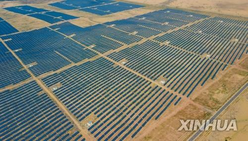

고정관념 깨기
"아프리카의 자원은 땅속에만 있을까?"
사하라의 풍부한 햇빛을 이용하여 태양광에너지를 만듭니다.
지리적 가치 도출
아프리카는 화석연료를 넘어선 무한한 ‘지구촌 탄소중립의 청정에너지 허브’이며, 세계와 연결된 동등한 에너지 파트너입니다.
사하라의 무한한 태양광 발전
재생에너지의 보고

images/res_solar_sahara.jpg 사진 위치
사하라 사막 초대형 태양광 집열 및 패널 단지
images/res_solar_sahara.jpg
세계 최대 일사량을 품은 사하라의 잠재력
사하라 사막은 전 세계에서 일조량이 가장 풍부한 곳 중 하나입니다. 사하라 사막의 아주 작은 면적만으로도 유럽 대륙 전체의 전력을 공급할 수 있는 잠재력을 지닙니다.
자료 출처: Stanford University
무한한 천연 재생 자원
글로벌 탄소중립 핵심 축
지중해 초고압 해저 전력망
대륙 간 에너지 연결망

images/res_submarine_cable.jpg 사진 위치
북아프리카-유럽 연결 초고압 직류(HVDC) 해저 케이블
images/res_submarine_cable.jpg
지중해를 건너는 녹색 전력 고속도로
사하라에서 생산된 깨끗한 전력은 초고압 해저 케이블을 통해 지중해를 건너 유럽으로 수출됩니다. 이제 아프리카는 도움을 받는 곳이 아니라 유럽의 에너지 전환을 이끄는 핵심 파트너로 도약하고 있습니다.
유럽-아프리카 초고압 직류 송전망(HVDC) 프로젝트 연계
대륙 간 상호의존성
대등한 그린에너지 파트너십
미래 잠재력 탐구: 가장 주목받을 아프리카의 자원은?